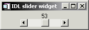

The WIDGET_SLIDER function is used to create slider widgets. Slider widgets are used to indicate an integer value from a range of possible values. They consist of a rectangular region which represents the possible range of values. Inside this region is a sliding pointer that displays the current value. This pointer can be manipulated by the user via the mouse, or from within IDL via the WIDGET_CONTROL procedure.
|
 |
To indicate floating-point values, see CW_FSLIDER .
Result = WIDGET_SLIDER( Parent [, / DRAG ] [, EVENT_FUNC = string ] [, EVENT_PRO = string ] [, FONT = string ] [, FRAME = width ] [, FUNC_GET_VALUE = string ] [, GROUP_LEADER = widget_id ] [, KILL_NOTIFY = string ] [, MAXIMUM = value ] [, MINIMUM = value ] [, / NO_COPY ] [, NOTIFY_REALIZE = string ] [, PRO_SET_VALUE = string ] [, RESOURCE_NAME = string ] [, SCR_XSIZE = width ] [, SCR_YSIZE = height ] [, SCROLL = units ] [, / SENSITIVE ] [, / SUPPRESS_VALUE ] [, TAB_MODE = value ] [, TITLE = string ] [, / TRACKING_EVENTS ] [, UNAME = string ] [, UNITS ={0 | 1 | 2}] [, UVALUE = value ] [, VALUE = value ] [, / VERTICAL ] [, XOFFSET = value ] [, XSIZE = value ] [, YOFFSET = value ] [, YSIZE = value ] )
The returned value of this function is the widget ID of the newly-created slider widget.
The widget ID of the parent for the new slider widget.
Set this keyword to cause events to be generated continuously while the slider is being dragged by the user. Normally, slider widgets generate position events only when the slider comes to rest at its final position and the mouse button is released.
When a slider widget is set to return drag events, a large number of events can be generated. On slower machines, poor performance can result. Therefore, this option should only be used when detailed or truly interactive control is required.
A string containing the name of a function to be called by the WIDGET_EVENT function when an event arrives from a widget in the widget hierarchy rooted at the newly-created widget.
A string containing the name of a procedure to be called by the WIDGET_EVENT function when an event arrives from a widget in the widget hierarchy rooted at the newly-created widget.
The name of the font to be used by the widget. The font specified is a “device font” (an X Windows font on Motif systems; a TrueType or PostScript font on Windows systems). See Using Device Fonts for details on specifying names for device fonts. If this keyword is omitted, the default font is used.
Note: On Microsoft Windows platforms, if FONT is not specified, IDL uses the system default font. Different versions of Windows use different system default fonts.
The value of this keyword specifies the width of a frame in units specified by the UNITS keyword (pixels are the default) to be drawn around the borders of the widget. Note that this keyword is only a “hint” to the toolkit, and may be ignored in some instances.
A string containing the name of a function to be called when the GET_VALUE keyword to the WIDGET_CONTROL procedure is called for this widget. Using this technique allows you to change the value that should be returned for a widget. Compound widgets use this ability to define their values transparently to the user.
The widget ID of an existing widget that serves as “group leader” for the newly-created widget. When a group leader is killed, for any reason, all widgets in the group are also destroyed.
A given widget can be in more than one group. The WIDGET_CONTROL procedure can be used to add additional group associations to a widget. It is not possible to remove a widget from an existing group.
Set this keyword to a string that contains the name of a procedure to be called automatically when the specified widget dies. Each widget is allowed a single such “callback” procedure. It can be removed by setting the routine to an empty string ( '' ).
The callback routine is called with the widget identifier as its only argument. At that point, the widget identifier can only be used with the WIDGET_CONTROL procedure to get or set the user value. All other requests that require a widget ID are disallowed for the target widget. The callback is not issued until the WIDGET_EVENT function is called.
The maximum value of the range encompassed by the slider. If this keyword is not supplied, a default of 100 is used.
The minimum value of the range encompassed by the slider. If this keyword is not supplied, a default of 0 is used.
Usually, when setting or getting widget user values, either at widget creation or using the SET_UVALUE and GET_UVALUE keywords to WIDGET_CONTROL, IDL makes a second copy of the data being transferred. Although this technique is fine for small data, it can have a significant memory cost when the data being copied is large.
If the NO_COPY keyword is set, IDL handles these operations differently. Rather than copy the source data, it takes the data away from the source and attaches it directly to the destination. This feature can be used by compound widgets to obtain state information from a UVALUE without all the memory copying that would otherwise occur. However, it has the side effect of causing the source variable to become undefined. On a “set” operation (using the UVALUE keyword to WIDGET_SLIDER or the SET_UVALUE keyword to WIDGET_CONTROL), the variable passed as value becomes undefined. On a “get” operation (GET_UVALUE keyword to WIDGET_CONTROL), the user value of the widget in question becomes undefined.
Set this keyword to a string that contains the name of a procedure to be called automatically when the specified widget is realized. This callback occurs just once (because widgets are realized only once). Each widget is allowed a single such “callback” procedure. It can be removed by setting the routine to an empty string ( '' ). The callback routine is called with the widget ID as its only argument.
A string containing the name of a procedure to be called when the SET_VALUE keyword to the WIDGET_CONTROL procedure is called for this widget. See the description of the PRO_SET_VALUE keyword to WIDGET_CONTROL for information on using this keyword.
A string containing an X Window System resource name to be applied to the widget. See RESOURCE_NAME for a complete discussion of this keyword.
Set this keyword to the desired “screen” width of the widget, in units specified by the UNITS keyword (pixels are the default). In many cases, setting this keyword is the same as setting the XSIZE keyword.
Set this keyword to the desired “screen” height of the widget, in units specified by the UNITS keyword (pixels are the default). In many cases, setting this keyword is the same as setting the YSIZE keyword.
Set this keyword to an integer value specifying how far the slider should move when the user clicks the left mouse button on the slider. The slider’s behavior depends on the widget toolkit in use:
The SCROLL keyword specifies the number of units the slider should move when the user clicks in the slider background area. The default is 10% of the slider range as defined by the MINIMUM and MAXIMUM keywords.
The SCROLL keyword specifies the number of units the slider should move when the user clicks on the arrows at the ends of the slider. The default is 1. On Windows systems, clicking in the slider background area always moves the slider by 10% of the slider range as defined by the MINIMUM and MAXIMUM keywords.
Set this keyword to control the initial sensitivity state of the widget.
If SENSITIVE is zero, the widget becomes insensitive. If nonzero, it becomes sensitive. When a widget is sensitive, it has normal appearance and can receive user input. For example, a sensitive button widget can be activated by moving the mouse cursor over it and pressing a mouse button. When a widget is insensitive, it indicates the fact by changing its appearance, looking disabled, and it ignores any input.
Sensitivity can be used to control when a user is allowed to manipulate the widget. Note that some widgets do not change their appearance when they are made insensitive, but they cease generating events.
After creating the widget hierarchy, you can change the sensitivity state using the SENSITIVE keyword with the WIDGET_CONTROL procedure.
Set this keyword to inhibit the display of the current slider value.
Sliders work only with integer units. This keyword can be used to suppress the actual value of a slider so that a program can present the user with a slider that seems to work in other units (such as floating-point) or with a non-linear scale.
Set this keyword to cause widget tracking events to be issued for the widget whenever the mouse pointer enters or leaves the region covered by that widget. For the structure of tracking events, see TRACKING_EVENTS in the documentation for WIDGET_BASE.
Set this keyword to one of the values shown in the table below to determine how the widget hierarchy can be navigated using the Tab key. The TAB_MODE setting is inherited by lower-level bases and child widgets from the parent WIDGET_BASE unless it is explicitly set on an individual widget. If the TAB_MODE value of the widget differs from that of the base, the setting on the widget will be respected when the widget has focus. For example, if a base does not support tabbing, but an individual child widget does support tabbing, this functionality will be enabled when the child widget has focus.
Note: It is not possible to tab to disabled (SENSITIVE=0) or hidden (MAP=0) widgets.
Valid settings are:
|
0 |
Disable navigation onto or off of the widget. This is the default unless the TAB_MODE has been set on a parent base. Child widgets automatically inherit the tab mode of the parent base as described in Inheriting the TAB_MODE Value . |
|
1 |
Enable navigation onto and off of the widget. |
|
2 |
Navigate only onto the widget. |
|
3 |
Navigate only off of the widget. |
Note: In widget applications on the UNIX platform, the Motif library controls what widgets are brought into and released from focus using tabbing. The TAB_MODE keyword value is always zero, and any attempt to change it is ignored when running a widget application on the UNIX platform. Tabbing behavior may vary significantly between UNIX platforms; do not rely on a particular behavior being duplicated on all UNIX systems.
Once the WIDGET_SLIDER has focus, use the Home and End keys, and right and left arrow keys to change the marker value on Windows. The Page Up and Page Down keys can also be used on Windows to increase or decrease the slider maker value by multiple units at a time. On UNIX, the Motif library controls tabbing functionality.
After creating the widget hierarchy, you can change tabbing support using the WIDGET_CONTROL procedure’s TAB_MODE keyword, or query a widget’s support for tabbing using the WIDGET_INFO procedure’s TAB_MODE keyword.
See Tabbing in Widget Applications for usage details and examples.
A string containing the title to be used for the slider widget.
Note: You can use language catalogs to internationalize this value with strings in particular languages.
Set this keyword to a string that can be used to identify the widget in your code. You can associate a name with each widget in a specific hierarchy, and then use that name to query the widget hierarchy and get the correct widget ID.
To query the widget hierarchy, use the WIDGET_INFO function with the FIND_BY_UNAME keyword. The UNAME should be unique to the widget hierarchy because the FIND_BY_UNAME keyword returns the ID of the first widget with the specified name.
Set this keyword to specify the units used when supplying measurements or position values. Set UNITS equal to 0 (zero) to specify that all measurements are in pixels (this is the default), to 1 (one) to specify that all measurements are in inches, or to 2 (two) to specify that all measurements are in centimeters. This keyword does not change the units used in a widget event structure or in most of the fields of the geometry structure returned by WIDGET_INFO.
The “user value” to be assigned to the widget.
Each widget can contain a user-specified value of any data type and organization. This value is not used by the widget in any way, but exists entirely for the convenience of the IDL programmer. This keyword allows you to set this value when the widget is first created.
If UVALUE is not present, the widget’s initial user value is undefined.
The initial value setting of the widget. The value of a widget slider is the integer value of the current slider position.
Set this keyword to create a vertical slider. If this keyword is omitted, the slider is horizontal.
The horizontal offset of the widget in units specified by the UNITS keyword (pixels are the default) relative to its parent. This offset is specified relative to the upper left corner of the parent widget.
Specifying an offset relative to a row or column major base widget does not work because those widgets enforce their own layout policies. This keyword is primarily of use relative to a plain base widget. Note that it is best to avoid using this style of widget programming.
The width of the widget in units specified by the UNITS keyword (pixels are the default). Most widgets attempt to size themselves to fit the situation. However, if the desired effect is not produced, use this keyword to override it. This keyword is only a “hint” to the toolkit and may be ignored in some situations.
Note: Setting XSIZE for a vertical slider (created with the VERTICAL keyword) does not change the visible width of the slider itself, but does change the amount of horizontal space occupied by the widget within its parent base.
The vertical offset of the widget in units specified by the UNITS keyword (pixels are the default) relative to its parent. This offset is specified relative to the upper left corner of the parent widget.
Specifying an offset relative to a row or column major base widget does not work because those widgets enforce their own layout policies. This keyword is primarily of use relative to a plain base widget. Note that it is best to avoid using this style of widget programming.
The height of the widget in units specified by the UNITS keyword (pixels are the default). Most widgets attempt to size themselves to fit the situation. However, if the desired effect is not produced, use this keyword to override it. This keyword is only a “hint” to the toolkit and may be ignored in some situations.
Note: Setting YSIZE for a horizontal slider does not change the visible height of the slider itself, but does change the amount of vertical space occupied by the widget within its parent base.
A number of keywords to the WIDGET_CONTROL procedure affect the behavior of slider widgets. In addition to those keywords that affect all widgets, the following are particularly useful: GET_VALUE , SET_SLIDER_MAX , SET_SLIDER_MIN , SET_VALUE .
Some keywords to the WIDGET_INFO function return information that applies specifically to slider widgets. In addition to those keywords that apply to all widgets, the following are particularly useful: SLIDER_MIN_MAX , STRING_SIZE .
Slider widgets generate events when the mouse is used to change their value. The event structure returned by the WIDGET_EVENT function is defined by the following statement:
{WIDGET_SLIDER, ID:0L, TOP:0L, HANDLER:0L, VALUE:0L, DRAG:0}
ID is the widget ID of the button generating the event. TOP is the widget ID of the top level widget containing ID. HANDLER contains the widget ID of the widget associated with the handler routine. VALUE returns the new value of the slider. DRAG returns integer 1 if the slider event was generated as part of a drag operation, or zero if the event was generated when the user had finished positioning the slider. Note that the slider widget only generates events during the drag operation if the DRAG keyword is set. When the DRAG keyword is set, the DRAG field can be used to avoid computationally expensive operations until the user releases the slider.
Under Motif 1.0, vertical sliders with a title organized in row bases get horizontally truncated and the slider doesn’t show (the title does). Use the XSIZE keyword to work around this.
|
Pre-4.0 |
Introduced |
|
6.1 |
Added TAB_MODE keyword |